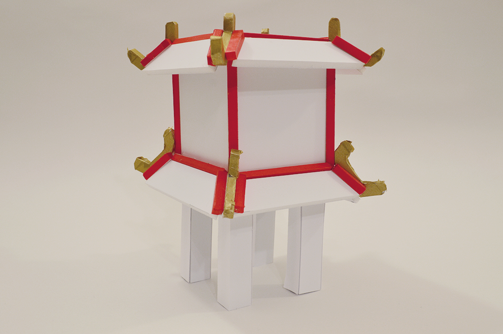
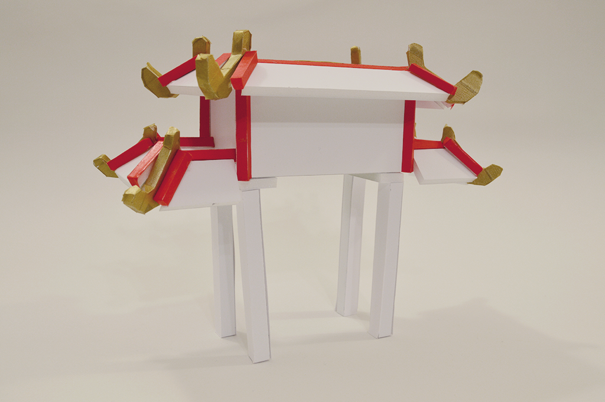

Week 1
Idea 1: A 2-player co-op game in which player 1 controls the
virtual character
and player 2 summons structures in the game by touching real objects. The
summons
structures can be used to help player 1 cross obstacles or give the character
temporary
added abilities. Materials/Software to be used is a makey-makey, 3D modelling
with
Blender, and Unity. Material to construct the real objects TBD. Art style will
be more
illustrative/stylized and inspired by ancient architecture.

Idea 2: A platformer game projected on four sides of a
rectangular
prism.
Players would move around the block, following the in-game character. The cube
could
also have details etched/drawn on with 3D levels adding a sense of depth. Then
by
using
projection mapping, the game can be overlayed on top of the wooden cube.

Week 2
Project Description (In Progress)
2-player co-op platformer game. Player 1 controls the virtual character while
Player
2 summons structures to aid Player 1 by touching real-life objects. Player 2 can
choose
to
summon different sized bridges, stairs, portals, or temporarily give Player 1 the
ability
to jump (Allows Player 1 to clear obstacles withou Player 2's help). Materials used
will
be
Unity, Blender, a Makey-Makey, and Balsa Wood to construct the real objects.
Rough Timeline
JAN 26: general concept art (especially buildings), figure out game camera
FEB 02: finalize designs, start rough prototype to test gameplay
FEB 09: FASA grant due, finish Unity prototype
FEB 16: start 3D production, start building structures
FEB 23: production (when asset is finished, add to Unity)
MAR 02: production
MAR 09: production
MAR 16: finish 3D assets, finish Unity assembly
MAR 23: finish building structures
MAR 30: integrate makey-makey to Unity build
APR 13: final build and presentation!
Created some initial structure designs inspired by asian architecture that will
inform the overall look of the other structures. Also set up the Unity project,
added
basic
character controls, and decided to go for an isometric camera.
Github Link

Week 3
References and Inspiration:
Wall-Mounted Level by Wizaga
Wall-Mounted Level by Wizaga is a co-op game with a tangible "screen" about reconciliation, developed in 2017. Using projection mapping and laser cutting, a tangible environment is created for the players to traverse. The two players must touch hands to go navigate through the environment, encouraging communication and empathy. I was mainly inspired by the use of the real, physical medium and the co-operative focused mechanics. The tangible wooden "screen" inspired the physical object mechanic of my project, since I thought the wooden screen added a lot of charm to the Wall-Mounted Level.
Lara Croft Go by Square Enix Montreal

Lara Croft Go is a mobile game developed in Square Enix Montreal in 2015. It is an isometric puzzle game, based on the popular character Lara Croft. I was inspired by the minimalist art style as it is simple but is still beautiful and detailed. As well, I liked the use of an isometric camera especially for my platformer-based project since it is easier to make 3D models and the environment more readable (rather than a 2D view). Finally, even though my project won't have a strong puzzle element, I liked the level design of the game as the puzzles are challenging but still clear.
Finalized the character design and created a model sheet that will be used as
reference
for the 3D model. I also implemented some of the core mechanics for gameplay in
Unity.
Still have to figure out the level
design but have movement, bridge, portal, ramp, and jump added. Each ability is
mapped
to a keyboard key (ex. bridge = K), so when makey-makey is integrated, each
object
just
has to be mapped to the corresponding key.


Week 4
Submitted my application for a grant from the Fine Arts Student Alliance for $300.
For the application, I wrote my project statment and project description which also
helped me get a better idea of what I'm making. I also
worked
on a concept for the level and environment design and started the low-poly model of
the
character. I also created a to-scale paper prototype of one of the maquettes. It was
useful to figure out measurements and techniques for construction.


Week 5
Started high-poly sculpt for character model. Also started the low-poly bridge mode
and
finalized the design for the portal structure.
Week 6 & 7
Finished modelling main gameplay assets. I was also awarded a grant from the Fine Arts Student Alliance!
Week 8
Started texturing artifacts and building and finished modelling character.
Interactive
versions of the models can be seen here.
Also made a test level in Unity and started integrating some environmental assets.

Week 9
Finished texturing the last two artifacts! I also recorded my process of texturing the teapot.

Week 10
Finished texturing the structures and created a design that might be used as the logo.


Week 11
Finally finished constructing the figurines that match the in-game assets!



Week 12
Some screenshots from the completed game.